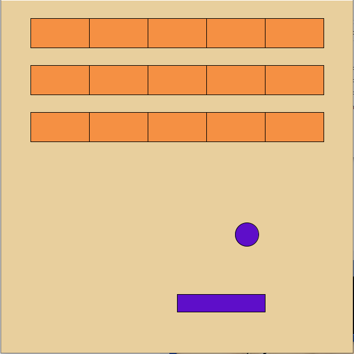
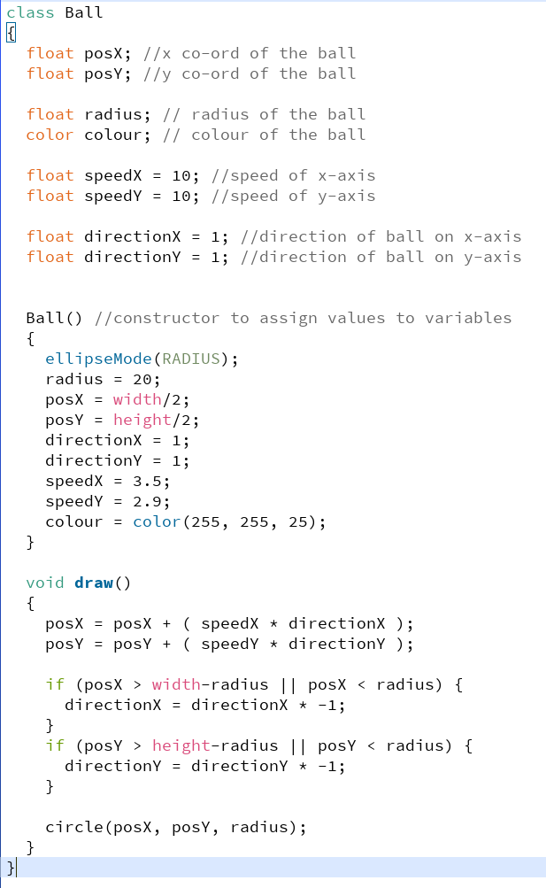
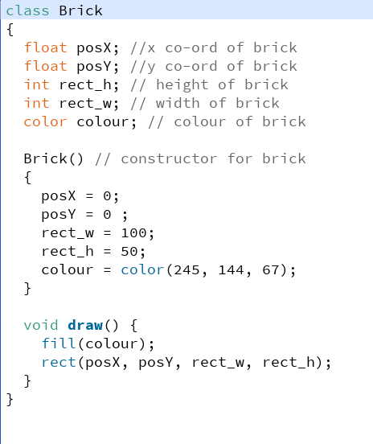
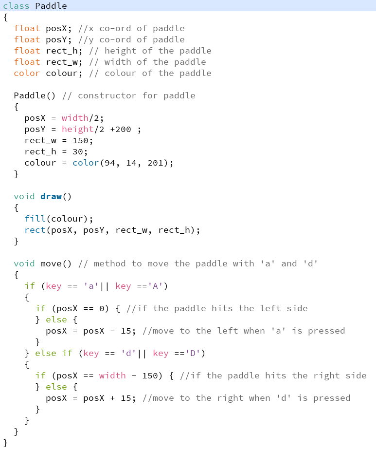

Ben MirandaBefore bootcamp, most of my knowledge came from my Computer Science A-Levels. I have basic knowledge of coding from when I taught myself some Python to aid in completing my A-Level Coursework. |
 | |
|
|
||
Bootcamp 2021: Brick BreakerFor my first programming project to conclude Coding Bootcamp 2021, I have made a brick breaker game. I used three classes to create interactive objects in the game. The paddle class contains code that draws and controls the paddle with the keys "A" to move left and "D" to move right. The ball class holds the properties for speed and direction that the moves the ball. This also contains the conditions for the ball to bounce off the sides of the window. The brick class contains the variables I used to draw the bricks used in the game. In the main code I used the classes to draw my objects onto the screen while using methods and if statements to create collision detection between the screen sides, moving ball and paddle. I also used a nested for loop and an array to create a few rows of bricks however, my collision detection was very buggy so I decided to remove it for the showcase so, the other functions of the program work properly but my attempt is included in the code attached on GitHub. There is also a game over feature so that if the ball touches the bottom of the screen (getting past the paddle) then the program will be paused and a "Game Over" text will be displayed. Before bootcamp, most of my knowledge came from my Computer Science A-Levels. I have basic knowledge of coding from when I taught myself some Python to aid in completing my A-Level Coursework. Check out the code on Github: https://github.com/benmiranda3/coding_bootcamp_project.git/ | ||
|    | ||
City Game 2022: Benny's AdventureBenny's Adventure is a 2d Platform Game that I developed as part of my Programming in Java Module. It is a simple game where the player has to collect a certain amount of coins from each level in order to progress to the next level. The game portrays how the character, Benny, is having an adventure through numerous environments picking up different items and beating new enemies. The character is able to walk, jump and shoot fireballs using the keyboard to control him. There are a few pickups that add to the characters stats at the top of the screen like an Extra Life Pickup which adds 1 life to the character or a star which adds 10 coins to the counter at the top. The game has 4 levels each with unique background music and sounds for interactions with different objects and game events such as killing enemies or dying to them. The defeat an enemy the character shoot a fireball which will kill it. Visual Elements as mentioned before are the hearts and coin counter which change depending on how far the student has progressed in the game. I've also implemented invisible walls to prevent the player from accidentally falling out of the world. Furthermore, the game features a toggle menu which allows the user to control the volume of the music and save the game. There is also a load feature however it is still not fully working. Check out the code on Github: https://github.com/cityteaching/citygame2122-benmiranda3.git/ | ||